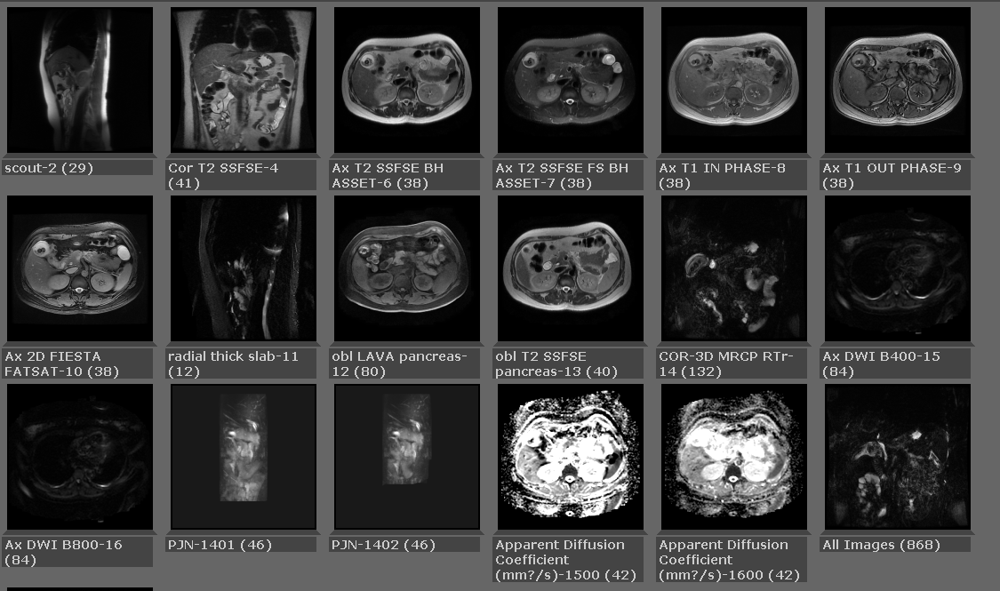

Protons (hydrogen atoms) have a property called nuclear spin. They behave like tiny rotating magnets.
Applied Magnetic Field
Within a large external magnetic field (called B0), nuclear spins align with the external field.
Some of the spins align with the field (parallel) and some align against the field (anti-parallel).
Precession
Spins wobble (or precess) about the axis of the BO field, like a dreidle.
This is called precession.
The resonance frequency, called Larmor frequency (ω0) or precessional frequency, is proportional to the main magnetic field strength:
Larmor Frequency
Remember that the RF pulse must match the Larmor frequency exactly for the proton to be able to "excited" by the pulse.
Gradients
The first step of spatial encoding consists of selecting the slice plane → Slice Selection Gradient (GSS).
A similiar technique applies phase and frequency encoding gradients in the other 2 orthogonal dimensions.
This complex sequence of RF pulses and gradients is precisely timed to excite protons from a specific volume of protons.
K Space
Contains raw data from the scan, after an inverse Fourier transform is performed on this data, images are produced.
Data at the center of k-space contains information about contrast.
T1 Contrast
TR → time from the application of an excitation pulse to the application of the next pulse.
It determines how much longitudinal magnetization recovers between each pulse; reducing TR will weight the image
in T1 as the differences between the longitudinal relaxation will be maximized.
T2 Contrast
TE → time between the application of the excitation pulse and peak of the echo signal
Transverse magnetization decreases according to T2 (field heterogeneities [which give T2*] are nulled by the 180° pulse).
When the TE is long, T2 differences are highlighted.
Sequence Classification
Spin Echo (180° rephasing RF pulse)
FSE
SSFSE
MRCP
Gradient Echo
Plain Gradient Echo/SPGR
In and out of phase
LAVA
FIESTA
DWI
Numerous variations have been developed within each of these families, mainly to increase acquisition speed:
Practical Take Home Points
Ask for subtraction sequences
Look at all sequences, including DWI
We don't have Eovist, get 1 hr delays
Spin Echo
The spin echo sequence is made up of a series of events: 90° pulse, then 180° refocusing pulse, signal reading at TE.
This series is repeated at each time interval TR (repetition time).
With each repetition, a k-space line is filled.
Major Disadvantage
T2 weighted spin echo sequences require long TR resulting in long acquisition times.
Fast Spin Echo
Fast Spin Echo
Good contrast vs noise
Breathing is not a huge factor in the pelvis
Fast Spin Echo
After the first echo, 180° pulses are used to obtain a spin echo train.
This fills the other k-space lines in the same slice.
Reduced number of repetitions (TR) → k-space is filled faster and slice acquisition time is reduced.
Fast Spin Echo
Put example here of good contrast vs LAVA
Single Shot Fast Spin Echo (SSFSE)
Single Shot Fast Spin Echo (SSFSE)
Motion-induced artifact is nearly absent because the center of k-space is sampled within a fraction of a second.

Single Shot Fast Spin Echo (SSFSE)
The echo train technique can be used to fill the entire Fourier plane with a single 90° pulse.
Requires the application of as many 180° pulses as there are k-space lines to fill, can be >256
Single Shot Fast Spin Echo (SSFSE)
These also employ partial k-space acquisition.
Just over half the k-space lines are acquired and the missing lines are calculated using k-space symmetry properties.
This reduces acquisition time by a factor ~2, but degrades SNR of the image.
Single Shot Fast Spin Echo (SSFSE)
Single Shot Fast Spin Echo (SSFSE)
MRCP (SSFSE)
Gradient Echo
Gradient Echo
The gradient echo sequence differs from the SE sequence in regard to:
The flip angle usually below 90°
The absence of a 180° RF refocusing pulse; a dephasing gradient is used instead to produce an echo
A flip angle lower than 90° decreases the amount of magnetization tipped into the transverse plane and gives a faster recovery of longitudinal
magnetization that allows shorter TR/TE and decreases scan time.
Residual Transverse Magnetization
In GRE, TR reduction below the time constant T2 may cause permanent residual transverse magnetization.
The transverse magnetization will not have completely disappeared at the onset of the following repetition and will also be submitted to the excitation pulse.
Two main classes of GRE sequence depending on how residual transverse magnetiztion is managed:
Spoiled residual transverse magnetization
Steady state GRE sequences that conserve residual transverse magnetization and therefore participate in the signal.
Spoiled gradient echo sequences
The residual transverse magnetization can be detrimental for T1 sequences.
Gradients and/or RF pulses (spoilers) are used to eliminate residual transverse magnetization.
Spoiled gradient echo sequences
Image weighting depends on the flip angle for T1 weighting; the greater the angle, the more T1 weighting
In and Out of Phase
The in-phase sequence is T1-weighted with sensitivity to susceptibility artifact.
Most T1 sequences in body imaging are GE and inherently possess sensitivity to susceptibility artifact.
The in-phase sequence benefits from a reference standard in the out of phase sequence a relatively long TE.
In and Out of Phase
The out-of-phase sequence is T1-weighted sequence with sensitivity to microscopic fat.
Wherever fat and water protons coexist, destructive interference and signal loss occurs.
"India Ink" artifact at water-rich and fat interfaces.
In and Out of Phase
Adenoma
In and Out of Phase
100197955 - fatty liver
Ultrafast spoiled gradient echo sequences
Use a small flip angle, a very short TR and optimized k-space filling to reduce acquisition time.
The drawback of a small flip angle and very short TR is poor T1-weighting.
To preserve T1, a 180° inversion pulse prepares magnetization before repetitions of the ultrafast gradient echo imagery sequence.
Ultrafast spoiled gradient echo sequences
100282554 - FSPGR
LAVA
LAVA → Liver Acquisition with Volume Acceleration
T1 sequence based on a 3D spoiled gradient echo pulse sequence.
Shorter TR/TE enables short breath holds for dynamic liver imaging with multiple phases.
Single breath hold for the whole sequence; < 20 seconds.
LAVA
100255615 - take clips through pancreas
LAVA
Endometrioma
Steady-State Gradient Echo
In steady state GRE sequences, residual transverse magnetization is conserved.
By maintaining residual transverse magnetization, excitation pulses will produce new echos (Hahn echos, stimulated echos) in addition to the
gradient echo that depends on the free precession signal (FID).
There are several variants in the family of steady state gradient echo sequences, according to the type of echo recorded (which determines
contrast) and how the gradients are adjusted.
Balanced Steady State Free Precession (FIESTA)
FIESTA = fast imaging employing steady-state aquisition
Balanced Steady State Free Precession (FIESTA)
The steady state is sensitive to dephasing caused by flow.
By applying balanced and symmetrical gradients in the 3 spatial directions, phase shifts induced by flow at constant speed are nulled.
FIESTA has good liquid/tissue contrast.
Balanced Steady State Free Precession (FIESTA)
100215044 - good
Diffusion Weighted Imaging
Focuses on the random Brownian motion of the water molecules inside voxels.
These motions encounter different obstacles in the body (cell membranes, proteins, macromolecules, fibers), which vary according to the
tissues and certain pathological conditions (edema, abscess, tumors).